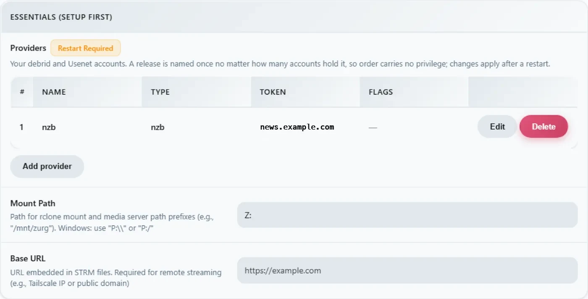

Windows, бинарник, с нуля
Вариант в одну строку
Запусти необязательный спонсорский bootstrap из PowerShell. Он ставит WinFsp через UAC, скачивает zurg и запускает выбор провайдера и диагностику:
irm https://raw.githubusercontent.com/debridmediamanager/zurg-site/main/public/install.ps1 | iexОн использует вход через GitHub в браузере и ставит всё в $HOME\zurg. Существующие бинарники и конфиги остаются на месте. Дальше — ручной вариант.
Без Docker и без WSL: .exe zurg в папке, config.yml, который ты пишешь один раз, и диск Z: в Проводнике.
На этой странице весь процесс разобран в два прохода: сначала RealDebrid с endpoint qBittorrent, потом полный сброс и Usenet с endpoint SABnzbd. Именно эти две установки люди делают чаще всего, и они задействуют разные половины zurg.
Всё ниже снято на живой установке: Windows 11 Pro 23H2 (сборка 22631), PowerShell 5.1, WinFsp 2.0.23075, zurg 2026.08.30.0459-nightly-73-g5b4c9790, а также аккаунт Real-Debrid и учётка новостного сервера Usenet. Имена пользователей изменены. API-ключи и количество файлов в библиотеке условные. Учётные данные тоже условные.
Что понадобится
- zurg.exe — из релизов для спонсоров. Станьте спонсором на gatekeeper, чтобы получить доступ к своему аккаунту GitHub. Эта страница предполагает, что вы уже скачали файл.
-
WinFsp — zurg монтирует библиотеку через rclone, а rclone на Windows для буквы диска нужен WinFsp. Установите его тихо или возьмите установщик:
$url = "https://github.com/winfsp/winfsp/releases/download/v2.1/winfsp-2.1.25156.msi" Invoke-WebRequest -Uri $url -OutFile "$env:TEMP\winfsp.msi" -UseBasicParsing Start-Process msiexec.exe -ArgumentList "/i", "$env:TEMP\winfsp.msi", "/qn", "/norestart" -Wait - Аккаунт — токен API Real-Debrid для первого этапа и новостной сервер для второго.
Больше ничего не нужно. Встроенный установщик скачает rclone, а также ffprobe, если его нет в вашем PATH.
Рекомендуется: пусть zurg сам завершит настройку
Создай папку, положи в неё zurg.exe и запусти установщик из PowerShell:
New-Item -ItemType Directory -Force "$HOME\zurg" | Out-Null
Set-Location "$HOME\zurg"
# Copy the downloaded zurg.exe here, then:
.\zurg.exe setup
.\zurg.exe doctorsetup спрашивает, каких провайдеров настроить. Выбери один или несколько из Real-Debrid, TorBox, AllDebrid, Usenet, Premiumize, Debrid-Link и Offcloud в порядке приоритета. Он запрашивает только учётные данные для выбранных сервисов. Затем он:
- Создаёт и проверяет
config.yml. - Ограничивает его ACL твоим пользователем, SYSTEM и Administrators.
- Скачивает
bin\rclone.exeиbin\ffprobe.exe, если ffprobe уже есть в PATH (тогда вconfig.ymlбудетffprobe_binary: ffprobe). - Включает монтирование rclone на
Z:. - Регистрирует
\Zurg\zurgкак задачу интерактивного входа и запускает её, когда на рабочем столе выполнен вход пользователя.
Если нужно, выбери другую свободную букву диска:
.\zurg.exe setup --mount-path "Y:"Установщик можно запускать повторно. Он обновит созданную задачу, но не заменит существующий config.yml.
Интерактивная задача сделана намеренно. Монтирования дисков WinFsp принадлежат сеансу входа в Windows, который их создаёт. Обычная служба Windows работает в сеансе 0, и её диск не виден Plex и Проводнику на рабочем столе. Это поведение установщика проверено на Windows 11 4 сентября 2026 года.
В руководстве ниже показаны файлы и конфигурация, которые стоят за установщиком, а затем настраиваются загрузочные клиенты для Real-Debrid и Usenet. Ручной первый запуск и рецепт запланированной задачи полезны, если хочешь собрать эти части сам.
1. Первый ручной запуск: zurg создаёт свой дом
Создайте папку, положите туда бинарный файл и запустите его один раз без файла конфигурации:
PS C:\Users\you> mkdir C:\Users\you\zurg
PS C:\Users\you\zurg> .\zurg.exezurg создаст нейтральный к провайдеру конфиг по умолчанию, подскажет, что делать дальше, и завершит работу:
INFO setup Config file not found, creating default from config.simple.yml
INFO zurg Default config created at config.yml
INFO zurg Run zurg setup to choose provider(s), or add a providers block to config.yml, then rerun zurg.Запустите .\zurg.exe setup, чтобы выбрать провайдеров и скачать вспомогательные программы. После setup папка будет выглядеть так:
C:\Users\you\zurg\
├── bin\ rclone.exe, and ffprobe.exe unless ffprobe was on your PATH
├── data\ library cache, keys, the __magic__ table
├── dump\
├── logs\ zurg.log, rclone.log
├── nzbs\ the Usenet watch directory (second pass)
├── strm\
├── config.yml
└── zurg.exeСгенерированный config.yml начинается с пустого списка провайдеров и двух фильтров директорий. Setup заполнит список на основе ваших выборов. Примеры ручной настройки ниже заменяют его конфигом для каждого руководства.
2. Проход с RealDebrid
Конфиг
Перезапишите config.yml этим содержимым: токен Real-Debrid, включённая точка доступа qBittorrent и монтирование как Z::
zurg: v1
providers:
- type: realdebrid
token: YOUR_RD_API_TOKEN
directories:
shows:
group: media
group_order: 10
filters:
- has_episodes: true
movies:
group: media
group_order: 20
only_show_the_biggest_file: true
ffprobe_binary: bin\ffprobe.exe # or ffprobe, if that is what setup wrote
rclone_binary: bin\rclone.exe
rclone_enabled: true
mount_path: "Z:"
rclone_extra_args:
- "--links"
magic:
enabled: true
qbittorrent:
enabled: true
api_key: "" # empty = zurg generates one and keeps it
categories: [tv-sonarr, radarr]Три особенности Windows:
--linksнеобязателен, но всё равно лучше оставить. zurg отдаёт библиотеку как rclone union, состоящий из локальной и удалённой половин, и WinFsp в момент появления диска спрашивает у корня монтирования, является ли он символической ссылкой. Без флага rclone на этот запрос отвечаетERROR : symlinks not supported without the --links flag: /и всё равно монтирует диск. Замерено 31.08.2026 на zurg2026.08.31.0443-nightlyс rclone 1.74.2 и 1.75.0: диск, обе половины union и запись в__magic__вели себя одинаково с флагом и без него. С флагом та же проверка пишет в логNOTICE: union root '': Symlinks support enabled, и rclone будет корректно работать с настоящими символическими ссылками, если вы когда-нибудь положите их вdata\local. Оставьте флаг, и лог будет чистым.mount_path: "Z:"здесь буква диска, а не путь POSIX. Подойдёт любая свободная буква.- Оставьте
magic.enabled: true, если когда-нибудь захотите, чтобы Sonarr или Radarr импортировали файлы с этой машины: импорт — это переименование внутри__magic__, и без этого каждый импорт превращается в полную загрузку. То же относится и к проходу Usenet ниже.
Запусти и почитай лог
Запускайте zurg пока простым способом: откройте PowerShell в папке:
PS C:\Users\you\zurg> .\zurg.exe --config config.ymlПервое, что он делает, это проверка сети Real-Debrid. Он разблокирует тестовые ссылки во всех регионах загрузки и измеряет задержку. Занимает это около двадцати секунд. Затем появляются важные строки:
INFO network_test Network test completed!
INFO zurg Provider realdebrid ready (type=realdebrid)
INFO router __magic__ serves sidecar files from data\local\__magic__
INFO router.qbittorrent qBittorrent API on /api/v2 and /qbittorrent/api/v2, save path Z:/__magic__/__all__, categories tv-sonarr, radarr
INFO router.qbittorrent qBittorrent: generated an API key in data/qbittorrent-apikey — paste it into Sonarr or Radarr's API Key field, or pin one as qbittorrent.api_key in config.yml
INFO zurg Starting server on http://[::]:9999
INFO rclone rclone started with mount Z:, union local C:\Users\you\zurg\data\localСам ключ в логе не выводится. Он лежит в data\qbittorrent-apikey. После этого начинается обход библиотеки. При первом запуске zurg читает все торренты на аккаунте, и на большом аккаунте это займёт некоторое время. Обход использует общий лимит API провайдера, так что на всё остальное на аккаунте его хватает меньше. Пока идёт обход, __magic__ отвечает Library is still loading. Это нормально, а не ошибка.
Может появиться одно предупреждение. Оно известное и не критичное:

Панель управления
http://localhost:9999/: размер библиотеки растёт по мере обхода, а также видны объём трафика и использование памяти. Quick Links — это весь интерфейс: Torrent Manager, Config, Directories, Magic, Logs.

После первого запуска всё настраивается в Config. Блок providers показывает единственный аккаунт:

Блок download-client содержит те же переключатели, что вы задаёте в config.yml, но их можно менять прямо здесь. Каждое изменение помечается Restart Required, и это буквально: оба эндпоинта регистрируют свои маршруты один раз при запуске.

А вот блок mount, где видно букву диска и контроль rclone:

Диск Z:
Когда zurg запущен, Z: в Проводнике — это файловая система петабайтного масштаба:

Но только если zurg запущен там, где Проводник его видит. И это единственное правило в этой настройке, которое действительно специфично для Windows. Подключение к букве диска принадлежит сеансу входа в систему, который его создал. Если запустить zurg через SSH-подключение или как службу, подключение существует, работает и невидимо для вашего рабочего стола. Это не баг WinFsp или rclone, так Windows определяет область действия букв дисков.
Проверь эндпоинт qBittorrent
Те же проверки, что и на любой платформе, из любого PowerShell:
PS> $KEY = Get-Content data\qbittorrent-apikey
PS> Invoke-WebRequest "http://localhost:9999/api/v2/app/webapiVersion"
# the healthy unauthenticated answer is a 403 — "the API is here, log in"
PS> Invoke-RestMethod "http://localhost:9999/api/v2/app/version" -Headers @{ Authorization = "Bearer $KEY" }
v5.0.4
PS> (Invoke-RestMethod "http://localhost:9999/api/v2/app/preferences" -Headers @{ Authorization = "Bearer $KEY" }).save_path
Z:/__magic__/__all__А теперь добавим в него торрент. Файл .torrent загружается через curl.exe -F (обычный curl в Windows PowerShell — это Invoke-WebRequest, у которого нет -F). Или же любой клиент сделает это за тебя:
INFO router.qbittorrent qBittorrent: added op1176 (dc98af37…) to realdebrid as W7FRRMVJWUOMSРелиз, который забрала эта установка, не был закеширован на аккаунте, поэтому очередь в стиле *arr показала настоящую загрузку: прогресс рос 2% → 10% → 50% → 75% → 99% примерно за шесть минут со скоростью, которую сообщал Real-Debrid. Потом:
INFO router.qbittorrent qBittorrent: op1176 (dc98af37…) finished on realdebridКогда торрент сообщил о завершении и появилась папка для импорта:
"content_path": "Z:/__magic__/__all__/[NanakoRaws] One Piece S01E1176 (THK TV 1080p HEVC AAC)"Чтение файла через Z: выдернуло мегабайт за миллисекунды. VFS read-ahead в rclone стоит перед провайдером, поэтому прогретые чтения работают быстро, как с локального диска, а части потока подгружаются следом.
Один отказ, о котором стоит знать: первый релиз, который пробовала эта установка, назывался …WEBRip…, а Real-Debrid блокирует некоторые названия релизов полностью. zurg знает эти шаблоны и отказывает до того, как потратит слот добавления:
WARN router.qbittorrent qBittorrent: realdebrid will not take op1176: it refuses that name outright, so the next account is triedВыбери релиз с другим названием, и он пройдёт. Руководство по торрентам подробно описывает весь эндпоинт: таймауты, режим только закешированного, семантику ошибок. Настройки клиента там те же, с двумя замечаниями для Windows. Host localhost, если *arr работает на той же машине. И *arr должен работать в той же сессии входа, что и zurg, чтобы видеть Z:. См.
3. Сброс
Переход установки с Real-Debrid на Usenet — это полная очистка: останови zurg, удали всё, что создал первый проход, и оставь бинарник и bin\, чтобы помощники не скачивались повторно.
PS> cd C:\Users\you\zurg
PS> .\zurg.exe service uninstall # removes the task setup made; or Unregister-ScheduledTask zurg for the manual one, or close the console window
PS> taskkill /IM zurg.exe /F ; taskkill /IM rclone.exe /F
PS> Get-ChildItem -Exclude zurg.exe, bin | Remove-Item -Recurse -Force
PS> Get-ChildItem
bin
zurg.exeЭта команда Get-ChildItem -Exclude … | Remove-Item и есть весь сброс — config.yml, data\, logs\, nzbs\, всё. Остаётся ровно то, что нужно для чистой установки.
4. Проход с Usenet
Конфиг
Тот же шаблон, другой провайдер: вместо токена debrid здесь аккаунт Usenet, а вместо эндпоинта qBittorrent используется эндпоинт SABnzbd:
zurg: v1
providers:
- type: nzb
nntp:
host: news.example.usenet.com
port: 563
tls: true
username: YOUR_NEWS_USERNAME
password: YOUR_NEWS_PASSWORD
connections: 8
directories:
shows:
group: media
group_order: 10
filters:
- has_episodes: true
movies:
group: media
group_order: 20
only_show_the_biggest_file: true
ffprobe_binary: bin\ffprobe.exe # or ffprobe, if that is what setup wrote
rclone_binary: bin\rclone.exe
rclone_enabled: true
mount_path: "Z:"
rclone_extra_args:
- "--links"
magic:
enabled: true
sabnzbd:
enabled: true
api_key: "" # empty = zurg generates one and keeps it
categories: [tv, movies]Восьми подключений для стриминга более чем достаточно. Точный лимит указан в тарифе вашего аккаунта.
Запуск
PS C:\Users\you\zurg> .\zurg.exe --config config.ymlКонтраст с первым проходом сразу бросается в глаза: никакого обхода. Библиотека NZB начинается пустой. Пока вы не добавите в неё NZB, загружать неоткуда, поэтому при запуске идут проверка сети, строки с эндпоинтами и подключение к новостному серверу:
INFO nzb NZB articles are kept in memory for the life of the process (nzb_segments: resident)
INFO zurg Provider nzb ready (type=nzb)
INFO router __magic__ serves sidecar files from data\local\__magic__
INFO router.sabnzbd SABnzbd API on /api and /sabnzbd/api, completed directory Z:/__magic__/__all__, categories tv, movies
INFO router.sabnzbd SABnzbd: generated an API key in data/sabnzbd-apikey — paste it into Sonarr or Radarr, or pin one as sabnzbd.api_key in config.yml
INFO zurg Starting server on http://[::]:9999
INFO rclone rclone started with mount Z:, union local C:\Users\you\zurg\data\local
INFO zurg Usenet account nzb connected: nntps://news.example.com:563 (8 connections)zurg подключается к новостному серверу сразу при запуске и держит соединения активными, включая TLS. Ключ SABnzbd сохраняется в data\sabnzbd-apikey.

Дашборд теперь показывает пустую библиотеку, и это правильно:

Блок providers содержит новостной аккаунт, а блок клиентов загрузки теперь показывает часть для SABnzbd:


Закинь NZB
Папка nzbs\ — это единственный вход. Положите туда один NZB, скачанный с любого индексатора, и zurg его подхватит:
PS> Copy-Item .\lanterns.nzb C:\Users\you\zurg\nzbs\INFO nzb Loaded NZB lanterns.nzb: 8 filesЭта строка означает, что NZB успешно разобран. Релиз появится как папка в __magic__\__all__ на маунте. Так как Usenet-релиз называет файлы как угодно, как захотел выкладывающий, внутренний файл может выглядеть так: J8AZfuVQCD4yPpRIF566Bv0xKoEpYa3M.mkv. Папка релиза носит имя NZB, а файлы получают имена от выкладывающего:

На этом этапе ничего не скачано, и не будет скачано, пока что-то не прочитает файл. Первое чтение эпизода (162 МБ) загрузило ровно те статьи, которые покрывают запрошенный диапазон, декодировало их из yEnc и отдало ответ. Последующие чтения были мгновенными, потому что VFS заранее прочитал данные вокруг них. Remux на 60 ГБ не занимает 60 ГБ дискового места ни в Usenet, ни в debrid.
Эндпоинт SABnzbd отвечает на те же запросы, что и всегда:
PS> $KEY = Get-Content data\sabnzbd-apikey
PS> Invoke-RestMethod "http://localhost:9999/api?mode=version&apikey=$KEY&output=json"
{"version":"4.5.1"}
PS> (Invoke-RestMethod "http://localhost:9999/api?mode=get_config&apikey=$KEY&output=json").config.misc.complete_dir
Z:/__magic__/__all__Неверный ключ отклоняется в теле ответа с HTTP 200. Так работает и сам SABnzbd, и zurg это повторяет:
PS> Invoke-RestMethod "http://localhost:9999/api?mode=queue&apikey=wrong&output=json"
{"status":false,"error":"API Key Incorrect"}Что касается клиентской стороны (Sonarr, Radarr, категории, корневые папки в Z:\__magic__), то пошаговое руководство по Usenet описывает всё по шагам. Каждый путь в нём получается заменой /mnt/zurg/__magic__ на Z:\__magic__. В руководстве по Usenet рассказано о блок-аккаунтах, retention и repair.
Чтобы работало постоянно: правила сессии
zurg setup сам создаёт рабочую интерактивную задачу. Управляй ею из каталога zurg:
.\zurg.exe service status
.\zurg.exe service restart
.\zurg.exe service stop
.\zurg.exe service start
.\zurg.exe service uninstallStop и restart сначала просят zurg завершиться штатно, чтобы его дочерний процесс rclone освободил диск. uninstall удаляет задачу, но оставляет бинарник, конфиг, данные, логи и кэш.
Ручной аналог — запланированная задача, которая запускается от твоего имени только когда ты вошёл в систему:
$wdir = "C:\Users\you\zurg"
Set-Content "$wdir\start-zurg.cmd" "@echo off`ncd /d $wdir`nzurg.exe --config config.yml"
$action = New-ScheduledTaskAction -Execute "cmd.exe" -Argument "/c $wdir\start-zurg.cmd"
$trigger = New-ScheduledTaskTrigger -Once -At (Get-Date).AddSeconds(5)
$principal = New-ScheduledTaskPrincipal -UserId $env:USERNAME -LogonType Interactive
$settings = New-ScheduledTaskSettingsSet -AllowStartIfOnBatteries -ExecutionTimeLimit ([TimeSpan]::Zero)
Register-ScheduledTask -TaskName "zurg" -Action $action -Trigger $trigger `
-Principal $principal -Settings $settings -Force
Start-ScheduledTask -TaskName "zurg"Триггер входа (New-ScheduledTaskTrigger -AtLogOn) вместо -Once заставит задачу снова запускаться после перезагрузки. ExecutionTimeLimit ([TimeSpan]::Zero) важен: без него Task Scheduler убьёт задачу через 72 часа.
Две ловушки, которые мы проверили на этой машине:
- Консоль с
-NoExitблокирует слот задачи. Если лаунчер оставляет окно открытым после остановки zurg, планировщик считает задачу всё ещё запущенной, и каждый следующийStart-ScheduledTaskотклоняется с ошибкой0x800710E0. ВыполниStop-ScheduledTask zurgперед повторным запуском или запускай бинарник напрямую, как показано выше, чтобы задача завершалась вместе с zurg. Get-PSDriveв одном окне не опровергает монтирование. Диск виден процессам в том же сеансе входа, то есть твоим приложениям на рабочем столе, а не каждому окну PowerShell, которое ты открыл. ЕслиZ:нет в каком-то окне, сначала проверь, из какого сеанса оно запущено, и только потом решай, что монтирование пропало.
Если Explorer тебе вообще не нужен (сервер без монитора или клиенты, которые работают по HTTP), всё это не важно: запускай zurg как удобно и направляй клиенты на http://localhost:9999/dav/ или на эндпоинты. Правило про сеанс касается только буквы диска.
Доступ к zurg с другой машины
Программы на этом ПК обращаются к zurg по адресу localhost. Брандмауэр Windows блокирует всё остальное в вашей сети, пока вы его не откроете. Для Sonarr, Radarr, медиасервера или браузера на другом компьютере выполните один раз в PowerShell от имени администратора (если в config.yml указан другой port:, используйте этот номер):
New-NetFirewallRule -DisplayName zurg -Protocol TCP -LocalPort 9999Другой компьютер тогда использует IPv4-адрес этого ПК, который выводит ipconfig, вместо localhost.
Если ответа по-прежнему нет, проверьте, нет ли правила, которое блокирует zurg. Если нажать Cancel в окне Windows с запросом на разрешение для zurg.exe, оно создаст такое правило, а правило блокировки важнее правила выше. Эта команда удаляет такие правила для zurg.exe в $HOME\zurg, тоже от имени администратора (измените путь, если zurg лежит в другом месте):
Get-NetFirewallApplicationFilter -Program "$HOME\zurg\zurg.exe" | Get-NetFirewallRule | Where-Object Action -eq Block | Remove-NetFirewallRuleДержим кэш маленьким
Монтирование сохраняет каждый проигранный файл целиком в data\rclone-cache внутри папки zurg ($HOME\zurg\data\rclone-cache, если вы ставили одной командой). Эти файлы остаются после окончания воспроизведения и растут до 256G по умолчанию.
Не рассчитывайте, что ограничение в 72h по возрасту само всё очистит. Плановые задачи Plex каждую ночь читают закэшированные файлы, из-за чего их возраст обновляется, и поэтому ничего никогда не истекает. Работает только ограничение по размеру.
Чтобы занимать меньше места на диске, уменьшите лимит в config.yml. rclone_extra_args — это один список, поэтому добавьте новые строки под уже имеющимся --links, а не пишите второй rclone_extra_args::
rclone_extra_args:
- "--links"
- "--vfs-cache-max-size"
- "50G"
- "--vfs-cache-min-free-space"
- "20G"--vfs-cache-min-free-space заставляет rclone прекращать кэширование, когда на диске остаётся столько свободного места. Затем перезапустите zurg:
.\zurg.exe service restartПосле перезапуска rclone сам уменьшит кэш до нового лимита. Чтобы очистить его сразу, сначала остановите zurg:
.\zurg.exe service stop
Remove-Item -Recurse -Force .\data\rclone-cache\vfs\*, .\data\rclone-cache\vfsMeta\* -ErrorAction SilentlyContinue
.\zurg.exe service startЧтобы узнать, сколько места кэш реально занимает, откройте Properties папки rclone-cache и посмотрите Size on disk. Частично загруженные файлы разреженные, поэтому Size показывает намного больше, чем реально занимает диск.
Подробнее см. Место на диске, которое занимает монтирование.
Обновление zurg
A sponsor build replaces itself:
cd $HOME\zurg
.\zurg.exe update
.\zurg.exe service restartupdate takes the newest nightly, checks the download reports the version it expected before replacing anything, and moves the running zurg.exe aside so Windows will let the new one land. When the installed build is already the newest it says so and changes nothing. The restart runs the new build.
На сборке, которая слишком старая для этой команды, установщик делает то же самое:
$env:ZURG_INSTALL_MODE = "update"; irm https://raw.githubusercontent.com/debridmediamanager/zurg-site/main/public/install.ps1 | iexУстранение неполадок
Всё ещё застрял? Спроси на форуме zurg-support в Discord. В Как попросить помощи написано, что стоит указать.
PowerShell через SSH, для тех, кто любит удалёнку
Windows PowerShell плохо разбирает некоторые привычки из POSIX, а SSH съедает кавычки. && здесь не разделитель; 2>/dev/null не перенаправление; $_.Property внутри однострочного -Command приходит искажённым. Если что-то сложнее простой команды, положи её в .ps1, скопируй на машину и запусти powershell -ExecutionPolicy Bypass -File C:\path\script.ps1. Всё, что на этой странице, было сделано именно так.
См. также
- Linux, Docker и macOS — та же установка на других платформах
- Sonarr и Radarr для торрентов — эндпоинт qBittorrent от начала до конца, включая настройки клиента
- Sonarr и Radarr — эндпоинт SABnzbd, так же
- Usenet — новостные аккаунты, retention, repair, бэкенд
nzbподробно __magic__— каталог, из которого импортируют оба эндпоинта